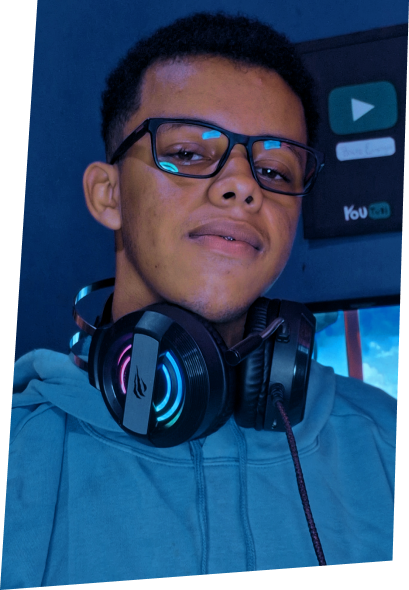
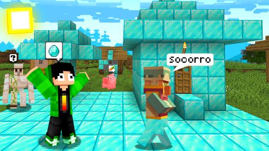
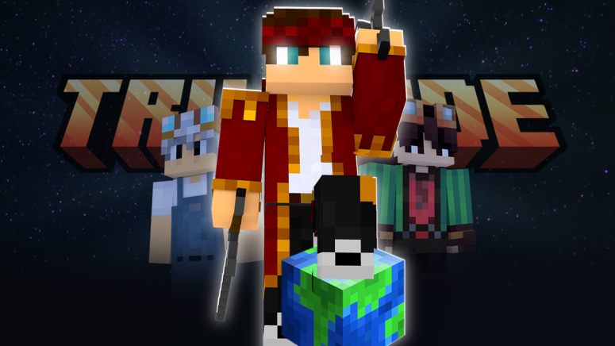

Desenvolvedor
Front End &
Back End / Editor &
thumbmaker
Localizado em Minas Gerais 🧀

Localizado em Minas Gerais 🧀
Desenvolvo projetos voltado para o web, tanto front end como back end com tecnologias como HTML5 e CSS3, uso o Javascript tanto no front como no back com NodeJs. E claro, desenvolvo algoritimos em C++. Além de sempre explorar novas linguagens. Conto também com experiência em edição de videos, com softwares como, Premiere Pro, Cap cut, Clip champ e outros, além de ter trabalhado com plataformas como youtube, tik tok, kwai, instragam, como produtor de conteúdo e editor.
Trabalhei como editor de vídeos para internet, editando tanto conteúdos próprios quanto de terceiros. Tenho experiência sólida na criação e edição de vídeos, com ênfase no nicho de games, especialmente Minecraft.
Além da edição de vídeos, também atuei como thumbmaker, criando thumbnails personalizadas para vídeos de Minecraft utilizando ferramentas como Photoshop e Cinema 4D.


Ver MaisMinha mais recente experiência acadêmica é o curso de Análise e Desenvolvimento de Sistemas (ADS) 🎓 que estou realizando no IFNMG Araçuaí. Além disso, busco sempre me manter atualizado com cursos intensivos online.